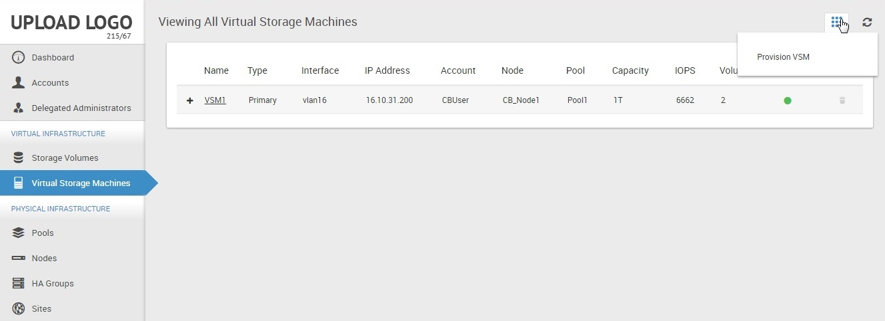
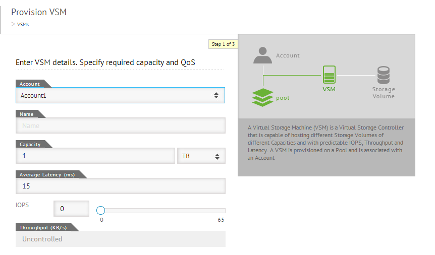
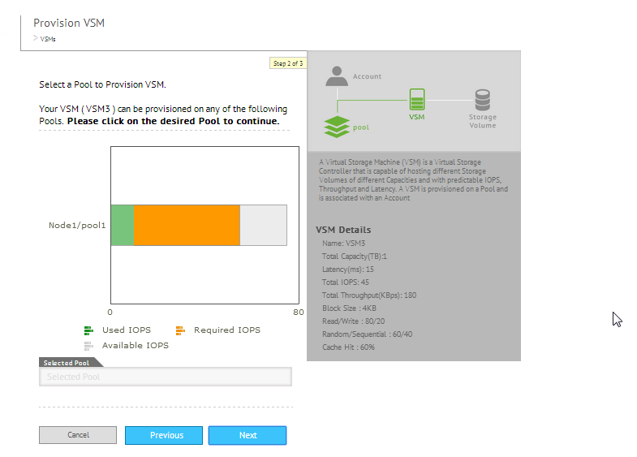
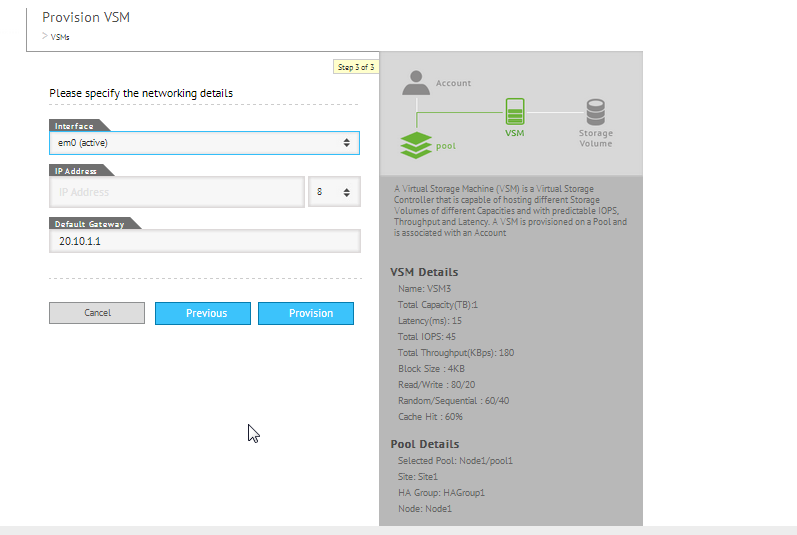
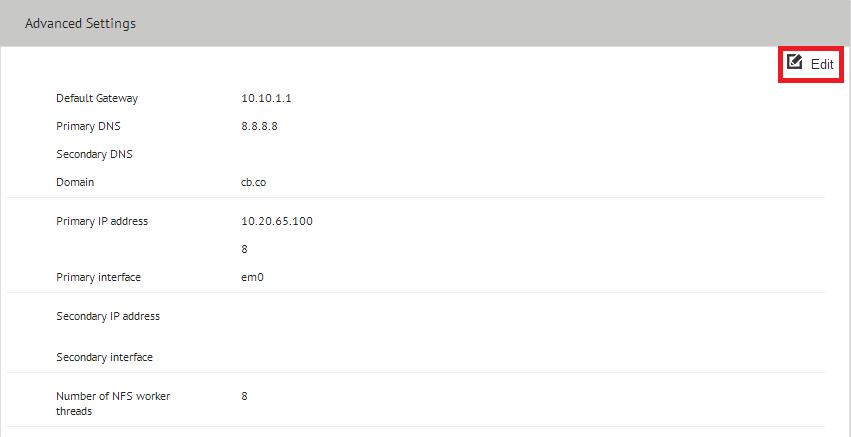
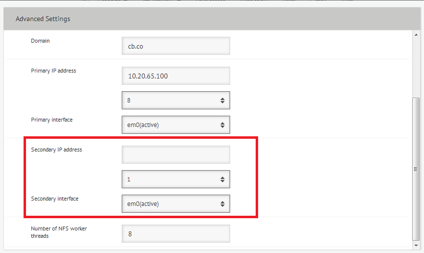

Provisioning a VSM
VSM is a Virtual storage controller capable of hosting Storage Volumes and LUNs. VSMs are the fundamental units of ElastiStor and the logical containers for holding performance parameters and logical storage. For all practical purposes, VSMs are equivalent of self-contained hardware storage boxes.
Use either the Create Account wizard or Virtual Storage Machines page (ElastiCenter > Navigation Pane > Virtual Storage Machines)
- Click Actions Icon and then select Provision VSM.

The Provision VSM page appears.

- Specify the following details:
| Field | Description |
| Account | The Account for which you create the VSM. |
| Name | A unique name for the VSM. |
| Capacity | The amount of disk space to be allotted for the VSM. |
| Total IOPS | The maximum per second I/O limit for the VSM. |
| Total Throughput | When you specify the Total IOPS, CloudByte calculates the Total Throughput and is automatically added. You cannot edit this field. |
- Click Next and then specify the provisioning details by selecting a Pool from the list.

- Click Next.
- Select the network interface details. For details, see
- Specify the tenant IP address and default gateway.

- Click Provision.
Multipathing
Multipathing is the ability to configure a server with multiple paths to the storage for take over on network failure. CloudByte ElastiStor supports multipathing for iSCSI. When network failure occurs, redundant network takes over and ensures that the iSCSI LUN is available.
Note: SATA disks or any disk with SATA interface is not supported for HA and multipathing configuration.
The details of the supported Maximum Multiple Connections (MCS) per LUN are as follows:
- 8 connections per LUN
- 16 sessions per LUN
To enable multipathing,
- In ElastiCenter, select Virtual Storage Machine.
- In the VSM page, select the VSM for which you want to enable multipathing.
- In the action icon, select Advanced Settings.
- Click Edit.

- Specify the required details.
- If partial failover of Pool is enabled (which is enabled by default), click yes at the prompt to disable it.

| Field | Description |
| Secondary IP address | Provide secondary IP address to enable multipathing. |
| Secondary Interface | Select an interface from the list. |